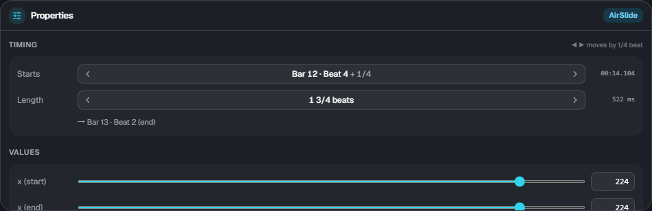
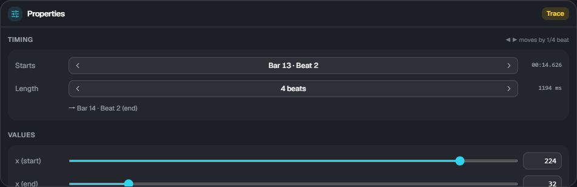

Properties and elements
Properties

Select one element on the timeline to edit its values in Properties at the bottom right. When several are selected, the count and a hint are shown.
Timing
- Starts: shown as bar, beat and fraction. ◀ ▶ move it by the beat snap step
- Length: only for elements with a range. ◀ ▶ make it longer or shorter. The end position is shown below
- On the right is the game time in ms. This is what is written to
lane3d.ex
Values
Change them with the sliders or the number fields. x, width and height are 0 to 255 (the same coordinates as floor notes; 64 is about one lane).

- Ease: 0 linear / 1 ease in / 2 ease out / 3 ease in-out
- Group: air elements and traces can follow the speed of a note group (empty means they follow the chart's scroll). → Scroll
Colors (#rrggbb) and the wavelength of wave cannot be changed in ES3 Studio yet. Whatever is written in lane3d.ex is kept as it is.
Kinds of elements
| Kind | Track | What it is |
|---|---|---|
| AirTap | Air | A single note on the air judgement line |
| AirLift | Air | A band that moves between the floor and the air judgement line at the same x (up / down). With length 0 it switches at that moment (a right angle) |
| AirSlide | Air | A band that moves sideways on the air judgement line |
| Trace | Trace | A decorative line without judgement. x and height can change together, so it can go diagonally |
| Guide | Trace | A translucent band on the floor (no judgement). Its position and width can change |
| Camera (cam) | Camera | Tilt, position, distance, roll, zoom and more. After the range it keeps the end value (it does not go back by itself) |
| Screen effect (fx) | FX | Fade, vignette, noise, wave, color shift, flash, shake, glitch and more |
For the detailed rules of each element (how to hit them, when warnings appear, and so on), see the documentation of the Extra-Slide v3 skin. The preview and load results in ES3 Studio show the same warnings and rejections as the game.